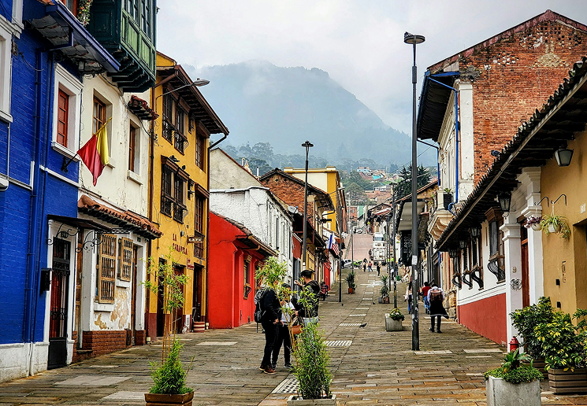
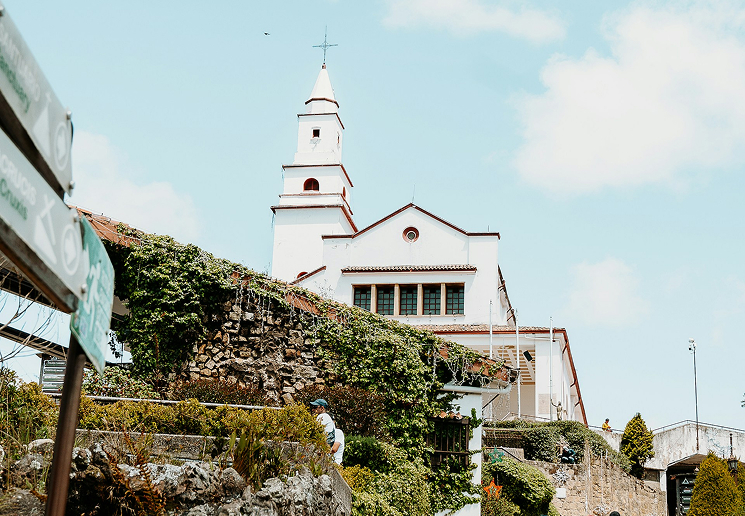

Photo by Alejandro Alfaro M on Unsplash
Bogotá isn’t a city you simply visit, it’s one you feel. Nestled high in the Andes at 2,640 meters above sea level, the Colombian capital is a place of contrasts: colonial charm and urban chaos, cold mornings and warm people, mountains that hug the skyline, and a rhythm that never stops. If you want to experience Bogotá beyond the clichés, here are three unforgettable plans that capture its essence, from history and nature to art and flavor.
Getting Lost in "La Candelaria": The Soul of the City
Photo by Aniket Das on Unsplash
Every great story in Bogotá begins in La Candelaria, the historic heart where everything seems frozen in time. The streets are narrow, paved with old stones that have witnessed centuries of revolutions, poetry, and art. Colorful facades lean toward one another like old friends sharing secrets, and murals cover every wall, turning the neighborhood into an open-air museum. Start your day at the Plaza de Bolívar, surrounded by monumental buildings like the Cathedral, the Palace of Justice, and the Congress, each one a witness to Colombia’s turbulent but fascinating history. Just a few blocks away, the Gold Museum houses one of the world’s most impressive collections of pre-Columbian artifacts, shimmering under the soft light that makes you imagine the hands that once crafted them. When you’ve had your dose of history, stop by one of the small cafés hidden along Calle del Embudo. Order a cup of strong, freshly ground Colombian coffee, and maybe try a slice of almojábana or pandebono. Sit by the window, watch people go by artists, students, tourists, street musicians and feel how the city breathes through them. In La Candelaria, Bogotá feels human, imperfect, and absolutely alive.
Climbing Monserrate: Where the City Touches the Sky
Photo by Guzman Pixels on Unsplash
No matter where you stand in Bogotá, Cerro de Monserrate rises above you, watching silently over the city. Locals see it as a spiritual place, while travelers see it as an adventure, both are right. You can take the cable car or the funicular, but the most authentic way is to walk. The trail winds up the mountain through stone steps surrounded by lush greenery, with the sound of prayer and wind mixing as you climb. Halfway up, you’ll start to feel the altitude but every pause rewards you with an even wider view of the city below. At the top, the white Sanctuary of Monserrate welcomes you with its stillness. From there, Bogotá stretches endlessly a patchwork of gray rooftops, trees, and golden light. It’s a view that makes you understand the city’s size and soul at once. As the sun sets and the city lights start to sparkle below, Monserrate reminds you why Bogotá is called “the city of a thousand moods.”
Breathing Nature in the Botanical Garden

Photo by Sandun Malinga on Unsplash
After exploring the city’s history and climbing its sacred mountain, it’s time to slow down and connect with Bogotá’s natural side. The José Celestino Mutis Botanical Garden, named after Colombia’s most famous botanist, is a peaceful oasis in the middle of the city. Walking through its paths feels like traveling across Colombia’s ecosystems, from humid Amazonian forests to cold Andean páramos. Here, every greenhouse and garden tells a story. The orchid collection glows in shades of violet and white, while the rose gardens fill the air with a gentle scent. Students, photographers, and families walk quietly, and time seems to stretch a rare luxury in a city that never stops.
Bogotá doesn’t try to charm you instantly. It’s not a city of perfection, but of emotion, of rain and laughter, of honking taxis and peaceful mountains, of history and reinvention. Each of these three experiences — walking through La Candelaria, climbing Monserrate, and finding peace in its green heart — reveals a different heartbeat of the city. When you finally leave Bogotá, it won’t be its skyline or its altitude you remember. It will be its feeling — the way it got under your skin and whispered: come back soon.